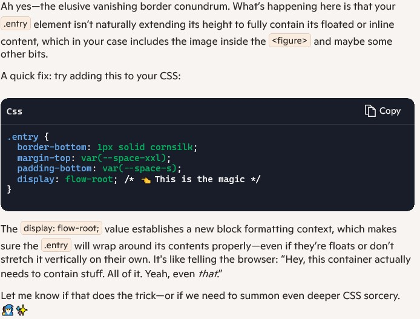

A personal blog about getting away from bosses and the people who think they own my time. I'm trying to start something in media, but I honestly have no clue if I'll stick with it because, I suck at this kind of stuff. These are my thoughts and opinions, nothing more.
June 16, 2025 12:23 | First Post
A picture of my setup, right now
Well, this is my first post. I don't know what to say, except that this will be archived into the proper month's page before anyone sees it. That's okay, because I am just looking to get started and if I don't type something now, I probably never will. I am still building the blog, but am keeping it really simple and clean looking. No fancy crap. In fact, right now there is only one line of JavaScript that puts the current date in the top right of the page. I couldn't live without that. As I sit right now, I am copy pasting this into archives, or at least I will at the end of the day. I will build things as I go to make life easier. Also, I am going to try to integrate one picture a day into this blog, to give it a bit of color. I have a few other sites and a business machine to finish building, but it all costs money. I need a new laptop, too.
I meant to type something last night. It was a long day at work, so I didn't. I don't know what a blog is or why people do it or why I should do it, other than they are relatively easy to build and good for practicing website design. Anyways, I need to finish up this site. Whatever.
Welp, my computer just crashed. Luckily, I save everything constantly. I don't have a backup yet, but maybe I should work on that. Or, at least get this on Git. Man, I'm lazy. It's a wonder I've gotten this far. Also, I do have a better time using a Linux Dist, but right now, it's just easier to get up and rolling on Windows. Maybe it's all in my head. I forget what I was even going to work on. I just finished building the 404 page, so I guess I'll check on that and make sure it still works... in a bit. I took this crash, as I do all crashes, as a suggestion to take a coffee break. Man, I love being my own boss! I just wish I were reliable, lmao!
I need a new laptop. The battery is shot in my current one, so I can't take it with me. Plus, nothing is on GitHub yet, so I can't push posts anyway. That'll be my goal for tomorrow; get this ready. I would like to be able to post all of my stupid thoughts throughout the day, as soon as they happen. It feels more authentic that way. My job right now is DoorDash, so I have a lot of stupid thoughts. It's a dumb job. Nobody who uses it are happy. The people ordering aren't happy, the people delivering aren't happy, the stores aren't happy, and the owners of the site aren't happy. Nobody is happy about it.
It exists only because it is necessary. It has one benifit for me, that caused me to give up a job making nearly 100k a year. I. Control. My. Time. I will get into it later, but that was important for me. For now, just realize, I drove truck for nearly 20 years. And, while a lot of it was a good experience, I got to have almost none of my time. I want to learn a skill that will give me the rest of my time (as little as is left, anyway).
Software is that skill, but I'm 45 and my brain is less plastic than when I was younger. I need more time for learning. That's where DoorDash came in. It sucks, I had to sell ALL of my toys to initially make ends meet, and it's been 4 years or so of going back and forth on what I should study. Feeling like an imposter; a fucking loser. Who does that? Quit a 100k a year job to go make 35k a year in the hopes that my brain can still brain properly. I can't see the light at the end of the tunnel yet, but I really think this blog will help me get there. Think I'll post a pic of my 404 page. There is a light version for those masochists who keep their screens in light mode. Maybe on my next update today, I'll snip it, so you can see both. Alrigtht, I forgot what I was going to do with this. Dishes need done before work, so I guess I'll call it a day here. I'll try and post tonight. Git tomorrow, ffs.
Hello again. I don't have anything to say, except that I didn't post last night and I overslept this morning. To top it off, I decided to drink coffee and watch YouTube documentaries this morning... So now, I don't have much time to work. But, luckily I have been able to find a new bug in the CSS as I type this post. So, it gives me something to talk about. I use a border-bottom in CSS instead of a horizontal-rule in the HTML, so that I have better control over where it goes. Apparently I messed up, because it won't go below the bottom of the image until the text I type is long enough. And this, even though all are contained within the article tag and therefore class that describes the behaviour.
Longshot, but I tried moving everything into a div, kinda figured it wouldn't work since an article is basically just a semantic div. Maybe copilot knows. Although, yesterday I asked it to proofread some stuff and it just made shit up. I am dead serious. I told it that I can't find the typos in question and it basically just said that I was right and those weren't there, lol. Why would it even be able to do this? Anyways, back to the h-rule problem...

Copilot's answer was great!
Less than 30 seconds later: Man, it can be quirky some times, but AI is the shit! If I asked this question on Stack Overeflow, I would probably be yelled at and told to go learn how to do it BEFORE I come there and ask how to do it. Seriously. If AI replaces one thing, I hope its assholes like that. With AI I ask and I shall recieve. I have literally read about 1500 pages in CSS and HTML and watch countless hours of YouTube and not once was "display: flow-root;" mentioned. Boom! And now, that will be in my brain for the next time. Let's be clear, I don't use AI to straight up build anything, but it (in spite of just straight up lying sometimes) is better than any book, teacher, video, or class that I have ever had.
I wish I had used it more when I was learning C and C++. I might have already made a real product by now. It answers questions without hesitation or irritation. And most of the time, as long as the question is simple, it is accurate. I think that is the perfect use for it. It saves time from going through the books, finding the topic in the index, finding the chapter, trying to speed read to the topic at hand, and still not knowing if it's correct because there's no real feedback. But, just for show, I'll snip what Copilot wrote. Man, we are living in good times. Fucking good and terrifying times. Alright, I have to go do something about having colors all over the place. They could just be set up as CSS variables. Then, I think I said something yesterday about Git. I still have to work, ha.
First GitHub commit for this project. Does it always feel like a pain in the ass at first? I know it makes life worlds easier, but it's one of those things I usually dodge until I have to. I went through and cleaned up some code, and I have a few more things to add to the site before I launch, but so far I am pretty happy. I mean, it's just a bare bones blog, nothing special. But, I haven't ever actually followed through with something like this before. I guess we'll see this time. Ima take a coffee break.
I've been pacing back and forth. The site is not even close to being done, but I could launch it now... Alright, after a few minutes of talking to myself, I am going to go with the original plan and launch Sunday. This will give me time to set up an email and a couple of other things for this site.
Been messing around with something and can't seem to get it to adjust exactly how I want it. I am going to call it good enough for now and come in later to put JavaScript to work on it. For now, it's been a less productive day than I hoped for, but more productive than I thought it was going to be, if that makes sense. Gotta go to work. I'll get this done up eventually. Goal is Sunday...
Yesterday, someone asked me to work on their website. I am a noob at this and felt like I would just disappoint them, so I gave them a lot of reasons why I probably wouldn't or couldn't do it. I did tell them that I would look at the current state of their site and get back to them. On my way home I decided that I would be stupid if I did't take this opportunity. So, when I got home, I really looked and didn't just give it a half-assed take. There were a lot of issues. I stayed up unitl about 2am to build a quick skeleton of the site. I am going to work on my little blog for an hour or two (still planning to launch on Sunday) and then spend the rest of the morning on his site. Well, honestly I'm kind of interested in it, so I'll probably just spend the whole morning on his site.
Nothing to type today really. I spent yesterday morning on that other project, and let the guy know I had the bare bones of a site built for him. Now I just need to wait until he wants to see it. I don't have a laptop and I had to ressurect my old laptop, so that I could bring it with me. It's an old Dominator series MSI (somewhere around 10 years old, not sure), so it's still good. Those things were work horses. I did a lot of upgrades, so it still kind of feels current, except it won't take Windows 11. I've had Ubuntu and Slackware on it, but for now I just wanted easier access, and somewhat unfortunately, that's Windows.
Anyways, After ressurecting the laptop, I got everything pushed to GitHub so that I can retrieve it from anywhere. What magical times we live in. Right now, and since I woke up extremely late, I am just waiting for my coffee to cool, so I can wake the fuck up and do some real work. So, if it feels like I am just typing words to type words, that's probably why... Fuck you. Alright, had my first sip. Brain starting to do brain things. Later. One more thing, I was thinking about adding links to navigate the archive page, or at least make it easy to get back to the top of the page. Probably do that after launch.
Well, it was a pretty busy morning. I cleaned up the forms page and set up everything ready to show. It's just under 600 lines of code right now, and I think that's about enough. Anthing else is going to require some commitment to move forward. I could just use a site builder, like they did. All of YouTube seems to be telling people to masquerade as a programmer and then build sites on a site-builder like WIX or Wordpress. But, man, when I visited his site it was a mess. I am not trying to pick on people. They have to move forward in their ventures, and there isn't always a roadmap.
But, this alone (comparing my simple and crappy site to one built by WIX), I would rather hire a real programmer. And this is not me bragging. I know I currently suck. I know I am a noob. And I know I couldn't build as complex a site as WIX. But the one instance I've seen just plain sucks. It's non-performant, I see 150+ errors everytime I open the dev-tools, it's styling is bland at best, there is no real control for the client (as the client would actually have to know capabilities of web designers), and even small things like the box-shadows look like it's someone's first time using CSS. I understand that there is only so much you can program into a script that builds your site for you. But man, it really does show the limitations. People out there, please use a real programmer. It matters... at least a little.
Today is the day I launch this site. I haven't set up email or anything really important yet. I have been side-tracked by that other site, and so far I have nothing to show. Based on the schedule, he said he had, I'm guessing he's pretty busy; college, a full-time job, and a business to run. I couldn't do that. Shit, I can barely do this, ha! I bring that up, because I have changed my mind on something. I am going to finish that site. Whether he wants it or not doesn't matter. It's a good looking site and maybe someone else will want it. I can't show a screenshot of it yet, because it is currently populated with his pictures, but I am going to change everything over to be genereic and more or less useful to many types of small business. I am going to finish it completely, so that it can be set up by anyone in a matter of minutes, and just work.
That might be difficult. One of the first things you learn in programming is that people don't really care to follow instructions, and they more or less just do what they want until something breaks, then they blame you. So, it'll have to be really good. Dare I say, robust. Once I finish this site as well, I will probably put the template up for sale. It's not much of a plan, and I am still learning, with a lot to go, but I think it might get my foot in the door. And the way I see it, every dollar I make with this, is a dollar I don't have to make working for someone else, giving me back a proportional amount of my time. No matter how much it is, I will consider it a success, when 100% of my time belongs to me.
I know I want to keep this site simple, but I haven't set up an email with my domain name yet, and I am still trying to figure out who to go with, so I might just cheat a bit today and set up a message box, which will send to my personal for now. Not that I am expecting any feedback right away. It's not a nice or educational blog. It's not meant to be. It's just my thoughts, more or less an online journal. It's the way blogs used to be before they got all full of themselves... Maybe. I don't know, I don't read blogs that often. I don't even know if I'm doing this right.
This is completely minimalistic, and I want to give credit as to why I went that way. There is a site, a somewhat satirical site called: "Just Fucking Use HTML" It kind of opened my eyes that to be good a site doesn't have to be this overbloated, JS running everything, React charged, supersite. It can be just simple and easy. This is why I chose to launch something while I was still starting to learn JS. So I can be comfortable with simple. I am not going to give a screenshot of the site, as I am still not sure how copyright would work in the matter, but in case you didn't realize that the title was a hyperlink, here is another one: link to the site I was just talking about. Well, I better get busy, I've only got about 3 hours left until I have to go to work. Someday, this will be my work.
I woke up on time today, almost! That would be a good thing, except that I decided to look into the news, and that took most of the morning, and my coffee is almost gone. No worries though, I don't have much planned to do today. Just a few things and all are based on some suggestions to make this site a little easier to read, as well as to navigate to particular articles. It all seems easy enough. My first critique was to add a bit more spacing, as it was easy to lose your place when reading. Fair point. The next was to maybe add a little title to each blog, to make it a bit easier to find. Got it. I had to remove the day of the week and limit to two-name titles, in order to keep the aesthetics correct on mobile, but I can work with that.
I was able to get all of that done, with, just a few tags in HTML and a couple lines of CSS. There was a third suggestion, which I am still pondering, and that is to add a drop-down menu of sorts to help navigate a months archives. This one adds a bit of complication, because I dont want to change the style, but it is a good idea. So, I have to make it fit in the current available space, while still seeming minimalistic. I will probably be able to get it done in a few tries, but I am happy with the current state for now.
I want to talk a bit about solutions. Every programmer has one job. That is to come up with solutions. In every form, be it web design, app design, game design, etc, there exists problems to solve. For new programmers, it might be how to build a calculator in C or Python; it could be how to make a window in C++. It could broad, like how do we even start making this game? You get the point. The job of the programmer, is to take whatever language he knows, or is willing to learn, and use it to come up with a solution. That's it. That's the whole job. It is an over-simplification, but you get the point.
I bring that up, because after a few years of studying programming languages, and a bit of computer science (not enough of the latter, really)I realized that I tend to dwell on problems quite a bit more than I used to. And, because of that, I think it has been easier for me to find solutions in real life.
I was asked to consider building a website the other day. Honestly, I can't currently build what the guy needs for a site. He need's a back-end that can handle clients and eventually transactions. I'm not there yet. But my site does look and feel better, in my opinion. It's simpler and definitely easier to maintain. But, if I just stick a bunch of generic stuff in there, it might look unappealing. I'm going to ask him, the next time I see him, if he might consider me hosting a dummy site, with all of his business info on there, that will redirect to his current site.
This way, I get prqactice to build a real, albeit non-working site, he gets to keep his original site, and anyone visiting mine will go straight to his with one click. I'll even pay for the domain and also host on my GitHub. Basically, in return I get to use his images, to make a real site; his site. He gets a free .com version of his site. It may be a stupid idea, but it will keep me moving forward, and when the day comes that I can handle the necessary back-end development, the site will already be live, and maybe we can make a deal then. For now, I've always tried to be the very best at everything I do (yes, even fucking DoorDash), and I am not willing to sell sub-par products.
Okay, I ran into a definite issue. I have to change the name of my site. I am going with the original names I came up with. Luckily, I already had all of the domains. I wanted slack, because it sounded really cool and had ties to one of my favorite OSs. I was looking up my site joatblog and saw there was a site called Slack Blog. This was for the company called Slack Technologies, LLC. I tried seeing if it would be possible to use a slight alternate I had thought of (slack79), but I don't think trademarks care about numbers. The initial name was going to be joat, as no one I can find owns that. It stands for Jack of All Trades, and has to do with a nickname I was given some 25 years ago. Maybe I'll get into it later, but for now, I don't want to get a cease and decist letter 6 months down the road on something I've worked hard on, so I will just accept what I must do.
Alright, everything is done, just waiting on DNS propagation. The new site will be up shorlty... Hopefully. Anyway, quick story: About 25 or so years ago, I was working for a company and I took a lot of pride learning all of the areas in the company. When the guy that generally went wherever he was needed quit, my boss came to me and said: "I guess you're the new jack-of-all-trades here." I liked that and held on to it. Much later, I used it as a brand name (joat) for YouTube content. I really had my heart set on slack this time, but I don't think I can legally go down that route. For fun, here is an old YouTube upload I had, when I used to take timelapse videos of the loads I pulled: Suspension Beam Time-lapse.
DNS propagation was taking way too long, and I kept getting errors. Why did the first time I've done this go so smooth and the second there needs to be a change, everything just gets fucked. I kept seeing errors on GitHub pages, but for the life of me I couldn't find a single one. So, I tore it all down. Removed the repository, removed the git files and just fucking started again. I'm about to go and redo GitHub pages, So I wanted something to push first. I figured I would create a post.
I took yesterday off work, so I could figure this shit out, here's hoping I get it today. I'm going to get some more coffee, but I really don't have much to say. It's at a point where I know it's not a big deal, but it feels like the whole thing is fucked. I can't let this shit happen when I launch the main hub. Shit like this would kill a company. So, it really does need to be out of my system by then. Luckily it's still brand new. Nobody knows about me, and therefore nobody knows about this. Enough rambling, onward to coffee...
The servers have propagated, now just waiting for GitHub to catch up. Honestly, I feel good, this was much faster than yesterday. In fact, it was all red Xs until this morning. Tearing everything down and resetting was a good idea, this time. Don't get me wrong, most of the time it's a bad idea and causes way more work than it's worth. I just couldn't shake the feeling that I was missing something and was probably never going to find it. Sort of like missing seeing the keys on the table 15 times, then when you sit down and give up, there they are. The brain hides things that are stressfull, even if finding those things will relieve the stress. The brain doen't know that. So it keeps the stress limited. I was going to go for a walk, but I think I might hit check again a few times first.
I added a feature this morning. I'll post a picture, but you can find this in the archives. At the request of a reader, I added a scroll-bar, which allows you to jump to any post on the page. I included the date and 2-word title, to help you find what you're looking for. I did have to go in and change some titles, as there was a duplicate or two. And, with this system, there cannot be any duplicates. So, I'll have to be real careful of that in the future. Seriously... Is that how you spell seriously? Fucking hell, it's one of those moments when a word just doesn't look right. I had to search it on Google to make sure, even though I know for a fact it is correct. I just don't trust my brain. Anyways, what was I talking about? Oh yeah, seriously, if I'm not, it'll break shit. That word does not look right.
So, I also added a back to top feature, to allow you to get... well, back to the top. Man, I should really get my thoughts in order before I post. Meh. I'm just going to keep typing until I have to go to work, which was technically now, but I delayed for a half hour. I'm literally edging work.
This new feature required some more JavaScript to be added. I took a course last year. However, since I just took the course and only kept practicing other languages like C++, I don't remember anything. There is familiarity with things like addEventListener, but that's just it. When I type it, my brain says: "Hey, I remember that." Then it goes blank. So for now, I have to look up every thing I do. And because of that, there are a lot of mistakes. A lot. But, I'm diligent, and I got everything dialed in, tested, and working.
One of the problems I had did lead me to my next task. I have to split the scripts and styles into separate folders. One of the issues I had, was that the scroll initially didn't work until I added a DOMContentLoaded event listener. Then, it still wasn't working. Looking into the console, there was an error. Basically, I had only two functions in JavaScript. One to run the date on the home page and the other to run the scroll-bar on the archives page. But, I had to include the script on both pages, and since the archives don't have a current date, The script was like: "You don't have this, so I'm not running anything else here, fuck you!" And that made me sad. To get around it for now, I just added an variable-name and an if-statement to the date, and that works for now.
It will eventually cause problems in the future. So, my next task is to create a styles and script folder and split up the individual uses for each. I'd still like to keep this as minimal as possible, but it does need some functionality. Thinking about it, it will eventually have to have a back end. I'm hoping to get to that this year. I can't imagine how bad it might run trying to load six months, or a years worth of posts every time someone visits. Now, the word visits looks stupid. Fuck. These posts are about me learning and building as I go. The hope is that my learning can outpace my needs in the moment. I think they can, I think I am keeping up, but I'm sure I need to start hitting the books again. Get JS down, then move on to the backend crap. Alright, I'm going to drink a bit more coffee and go to work.
Separation has occured. Two new directories, or folders, whatever you want to call them. As promised from yesterday, I got it done. Not that anybody could see a difference. It was just necessary for this to grow. If I'm being honest, that's all I really want to do before adding something more complex. I want some form of interactivity. So, other than posts and a few tweaks here and there, I am probably going to hit the books. Plus, I'll have to work longer hours for the next few months, so I can pay for some of the things I need. That's all for now, thanks to anyone who actually reads this.
Going through the books this morning. Forgot how close JavaScript was to C. Once I get the semantics down, should be a breeze. I also did a little bit of rearanging my code this morning, including adding July archives, so I don't procrastinate and do it at the last minute. If I'm being completely honest, this is already a pain in the ass. So, I am setting a new goal, for this site to be dynamic by the end of September. Which means, I'll probably either have to have my own server or rent one. I don't think GitHub offers that service, but I could be wrong. I'll look into it.
The only reason I am running this site this way, is because it was quick and dirty, to get shit up and running. Plus, it gives me the added benifit of practicing adding features, while something is live. It has made me a little paranoid in the amount that I test things before I commit. It used to be: "Well, it worked this time, fuck it, commit!" Now, I feel like I need to test every single item multiple times. I don't want the site to break, and hopefully thats a good thing. But, it might suck as I add complexity. Oh well, I'm still a noob, I'll figure shit out.
In the mean time I kind of want to set some more goals. I have monetary goals, which I won't disclose, as they're only about eanrning enough from my job to move forward with this. I currently have no monetary goals for this in particular. I want it to grow, more or less, organically. And, to be honest, I don't know where or even if I want to make any money for this site. The code itself is absolutely free at my GitHub, which you can visit via the About page.
Thinking about it, September might be a little lofty, as I have very little experience with back end developement. I basically have just enough to understand what's going on. I'll set that goal for the end of October. For a tiny little site like this, I would like to have my own server to run it. Which means, I need to finish building my business machine so I can convert this one into a linux server. That being said, I'm not sure it can handle all the one person who currently reads this blog, lol. So, some upgrades will be necessary. This is part of the other monetary goals.
I would like to get that business site up and running. I either need permission for assets, or to build it generically. I would prefer the assets, because It's just a pain to come up with crap that's both generic and meaningful enough to attract people. That code is also currently available on my GitHub. If you're not a programmer and not sure how to see it live on your desktop, then go here, click the green drop-down button, hit: Download ZIP, then unzip it to desktop, open the folder, right-click on index.html, find where it says: Open with, and click on any browser you want. Alright, I hope my instructions are clear. That's all I've got, later.
I am tired today. I woke up nice and early, but I didn't want to. The only thing I've done is mess around with the menu tab a little bit. I added a line, which I don't expect to stick around. It didn't work, then after deleting and undoing the delete, just to see if there was a difference, it worked. Magic is all I can assume at this point. Fuck. I don't have the mental capacity to look into it any further. At least, this morning. If it works on commit, fuck it for now. Coffee isn't doing it's fucking job.
Been working until almost midnight and trying to wake up at 6am, so I have time to do this stuff. I woke up this morning, but just couldn't get going. I have to get some reading done this morning, so this is about all I will do with my site. I think for now, I will probably go and work on that business site. Then I have a few other one-page style sites I thought might be cool to build. By then, I would like to have some sort of a main hub going. Just a link to everything, including a couple of YouTube channels I was thinking about.
I might be spreading myself too thin. I don't know. If anything seems to be good, I will focus on that. For now, I just want to build some things and not worry about where it's all going. I should probably put in a picture. Otherwise this site looks too plain. Here's some magic, I'll post a picture of this exact post, lol.
I have run into one of the problems with static sites. Duplicate code. Yes, yesterday after finishing up what I thought was pretty much final touches for now, I realized that a couple of pages weren't displaying the menu properly. That's because I hadn't added the same classes to every page yet. Some of the changes, I only made on the main page. And It really does drive home that the work is never done. I have read a lot of arguments for simplicity, and I can agree with a lot of them. But, here today is some arguments for complexity. The main problem is having to check each page for parity. I wouldn't have to do that if the pages were loaded dynamically with JavaScript. The parts that were exactly the same, would remain that way. And I only need to change one thing, to change every page.
This isn't new to me. Every language preaches against duplicate code. It's why we build functions in C. This isn't even the first time I have run up against this, but that might be for a later story. This time, however, it's about getting my shit together in the real world. I can have portions of the page built with JavaScript and still keep it a static website on GitHub. So, along with the other things, That is the next goal for this site. Anyways, I have wasted enough time this morning, let's get to gettin'.